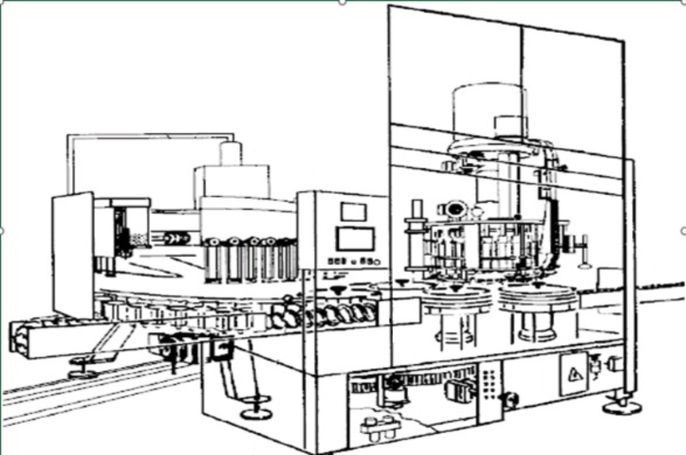

Motivo da escolha

Clique na imagem para ampliar e consultar os dados do ranking de ineficiência.

2,40%Ineficiência da ECH 02 no trimestre
3ªMáquina com maior ineficiência
109Ocorrências AutoFlush no SPLAN
0,39%
Índice de Mal Cheia — Nov/Dez
Ver análise de Mal Cheia
Foco 2: Mal Cheia
Pistões elevadores, tulipas, vedações, roletes e componentes de ajuste.
Ver análise do período